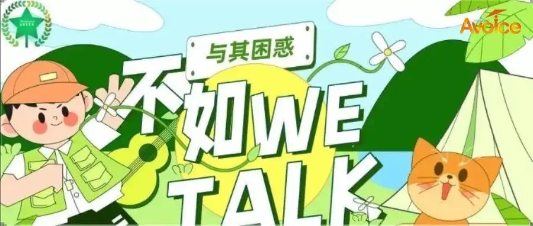
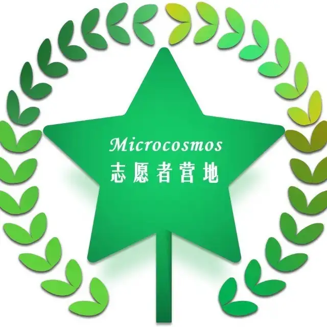
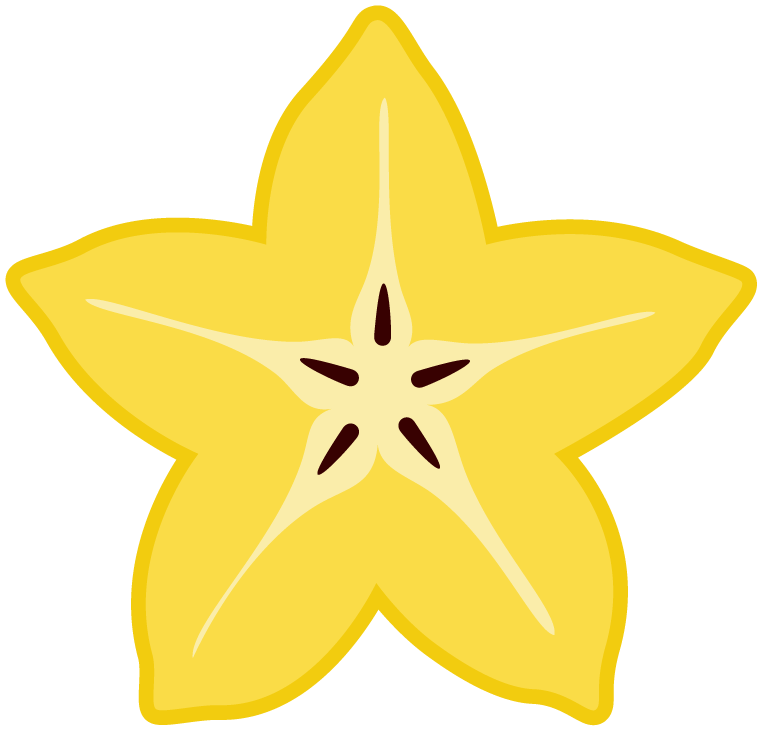
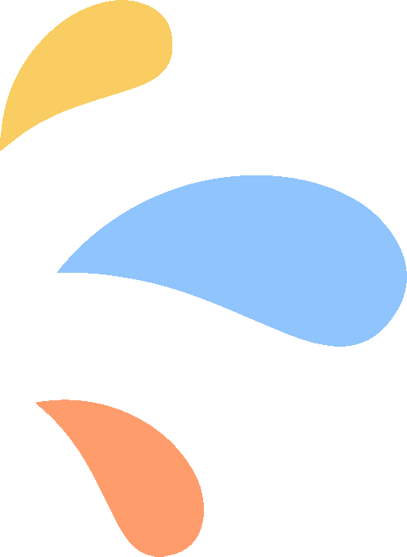
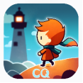

以下文章来源于Microcosmos志愿者营地 ，作者溯水珍情

Microcosmos志愿者营地致力于打造可持续发展资讯分享与青年志愿者赋能平台，自2019年至今已分享2700+优质工作与实践机会。创始人小溯拥有近4年联合国系统工作经验，2025年获评全球可持续发展青年领袖30 Under 30。


We Talk
公益成长项目
_ Microcosmos志愿者营地 _
在当前瞬息万变的职业海洋中，每位青年都是一位潜力无限的航海家。拥有正确的航向，是抵达梦想彼岸的关键。
你是否正站在人生的十字路口，对未来的职业道路或奋斗方向感到迷茫？想要在激烈的竞争中脱颖而出，却不知从何下手？
不用担心，We Talk 公益成长项目正是为你量身打造的灯塔。我们期待为你指引方向，助力你的成长。
01

02
We Talk交流时专注青年交流，招募导师为学员提供长达一小时的一对一交流服务。目前开放的九个交流领域为学习、考公、竞赛、深造、科研、求职、创业、社会实践和人生规划。
如果你在某一领域有突出表现，欢迎报名导师通道，为项目学员答疑解惑。如果你期待在某一领域有所成长，欢迎报名学员通道，与导师探讨个人成长。当然，你也可以选择报名两种身份，在项目中收获多种体验。
交流时时间线
4月29日-5月19日
报名时间

6月1日
导师见面会
6月2日
学员说明会
6月3日-6月23日
交流时间

特别说明
1. 我们会在报名第一周开始，陆续向符合要求的潜在导师发送笔试和面试邀请，请有意愿申请导师席位的小伙伴尽早报名。
2. 我们会向所有申请成功的导师和学员发放录取邮件和项目手册。若你在5月29日后没有收到我们发送的邮件，则视为申请失败。我们欢迎你继续关注营地公众号，获取更多项目后续信息。
3. 所有成功配对的导师都需要在6月3日-6月23日期间完成至少一场一对一交流。
交流细则
交流前
交流中
交流后
左右滑动查看更多
参与导师
左右滑动，查看更多

左右滑动，查看更多
We Talk实验室专注职业赋能 ，内含职业认知工作坊入门版和进阶版、行业分享会、简历工作坊、单面/群面工作坊、职业推介会等多个精彩活动，旨在为学员提供切实指导，助力学员更好成长，奔赴人生理想。
七大活动

（以上活动时间如有变动，将另行通知）
参与收获
1
担任导师，你将获得哪些宝贵机遇？
1. 加入导师社群，与更多志同道合的小伙伴交流。
2. 深度参与公益，用自身经验助力学员更好成长。
3. 梳理经历优势，回顾过往历程并总结自身经验。
4. 获得专业培训，掌握相关交流技能并不断进阶。
2
作为学员，你将开启怎样的收获之旅？
1. 加入学员社群，聆听朋辈或前辈的指导和分享。
2. 扩大社交圈子，建立人际关系并锻炼交际能力。
3. 助力个人成长，提升自我认知和职业规划水平。
4. 明确个人目标，为后续的成长和发展打下基础。
3
额外福利
1. We Talk项目为导师设置了完整的成长路径，根据导师一对一交流的时数、交流及时率、学员评分、项目参与度和综合表现来评定等级。完整的成长路径为“初级导师-中级导师-高级导师-资深导师”。
2. 交流期间投入度高且表现优秀的学员，有机会获得We Talk项目官方认证的“优秀学员”电子证书。
3. 有机会与同城小伙伴深入交流，结交志同道合的伙伴。
4. 表现优秀的学员有机会获得“职探云游”内测权益：
A. “金融岛-一级市场基金”互动剧本游玩 有效期一个月
B. 性格-职业测评报告基础版 一份
C. MBTI专属梦灵头像 一个
D. 首批内测陪伴社群加入资格

“职探云游CareerQuest” 游戏化生涯探索平台：
将行业常识及岗位流程融入趣味的互动剧本，玩家将扮演职业人物，通过领取任务、与NPC交互以及闯关的模式，体验各职业的生动故事，如“作为投资经理在金融岛上揭开市场上金融巨鳄的阴谋”、“作为产品经理度过团队危机”等。同时，剧情内设置的隐式情境测评，能够帮助玩家发现内在天赋优势，并针对行业岗位给出细致个性化的分析与建议，帮助年轻玩家找到心中热爱的方向。
03
招募对象和标准
导师
1. 教育背景为本科四年级及以上，海内外在读学生与在职人士均可申请。
2. 具备一定的社会实践或工作经验，在求职/学习/考公/深造/竞赛/科研/创业/社会实践/人生规划等一个或多个领域较为突出。
3. 对朋辈导师、生涯规划、职业指导等领域感兴趣，具有相关经验的申请者将给予优先考虑。
4. 具有良好的自我认知能力、分析能力、共情能力、倾听能力与沟通能力，能够给学员提供高质量的建议和指导。
学员
1. 申请者需为 海内外高校的本科生、研究生（年级不限）或初入职场的年轻人。
2. 态度认真诚恳，有切实需求。
3. 目的性明确，有坚定的交流领域和方向。
4. 交流期间积极主动，尊重导师并愿意与导师建立友好关系。
5. 遵守项目安排，服从交流细则，需准时参加学员说明会。
招募人数
We Talk 交流时招募导师人数不限，学员人数预计为 50-60 名。
报名须知
1. 申请者无须支付任何报名费用。
2. 本项目为公益性质，项目团队不会为导师支付任何酬劳。
3. 请认真填写报名表，所填信息将作为导师与学员匹配的重要依据。
4. 后续交流时聚焦的领域需与报名表上的信息保持一致，不可随意更改。请申请者谨慎填写相关内容。报名表中需上传个人简历，其中导师需上传个人生活照，供项目团队制作导师海报使用。
5. 实验室版块的活动过程中可能会涉及参与者的个人信息。请遵守活动要求，保护自身及他人隐私。
6. 单场工作坊的参与名额为20-30人。名额有限、择优录取，请感兴趣的申请者尽快申请。
7. 若入选，需配合项目团队要求，并全程参加项目。不管是交流时还是实验室版块，报名后均默认导师和学员能够按时参与活动。如因个人原因无法按时参与，后续将不再开放We Talk项目其他活动的参与资格。
8. 所有交流时和实验室活动都在线上举行。
筛选流程
导师
报名表初筛→线上笔试→线上面试
学员
报名表初筛→根据报名表内容完成度和填写认真程度+现阶段需求描述+现有导师资源确定学员名单
报名方式
请扫描下方二维码或点击“阅读原文”填写报名表。
温馨提示：每人限填一次，请谨慎填写。
报名截止时间
2024年5月19日22:00（北京时间）
合作方招募（长期招募）
项目合作伙伴
在营地五周年之际
我们发布了五周年年报
欢迎点击下方图片了解更多营地成就
文案 | 李晓盼
编辑 | 陈亿旋
海报 | 张舒妍、郑杨
排版 | 李晓盼